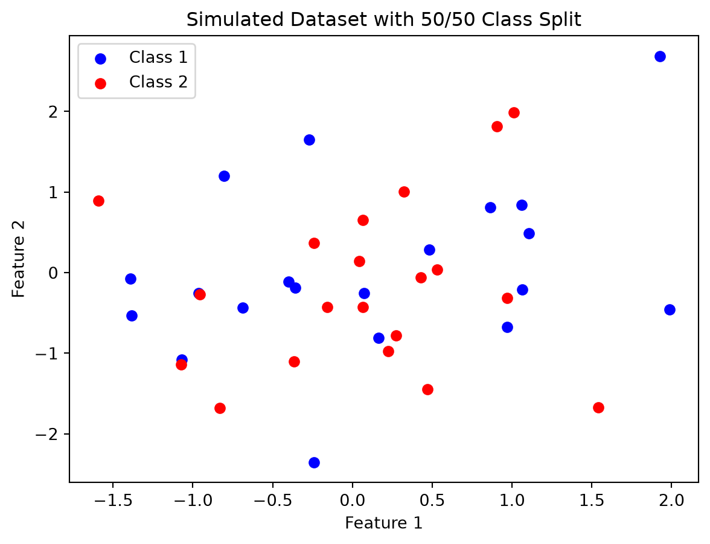
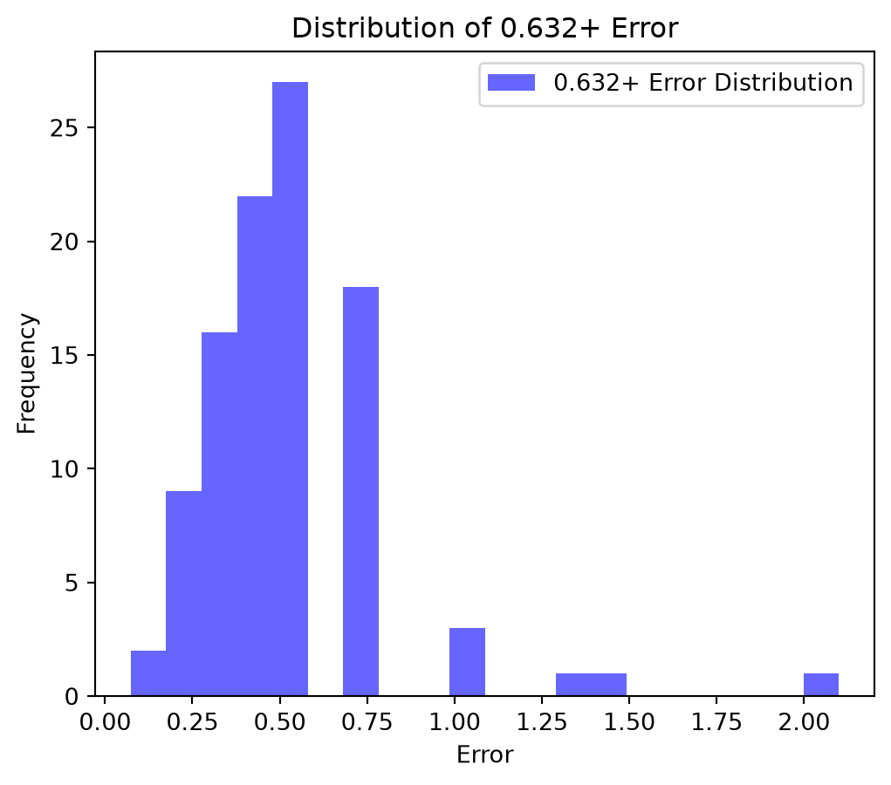
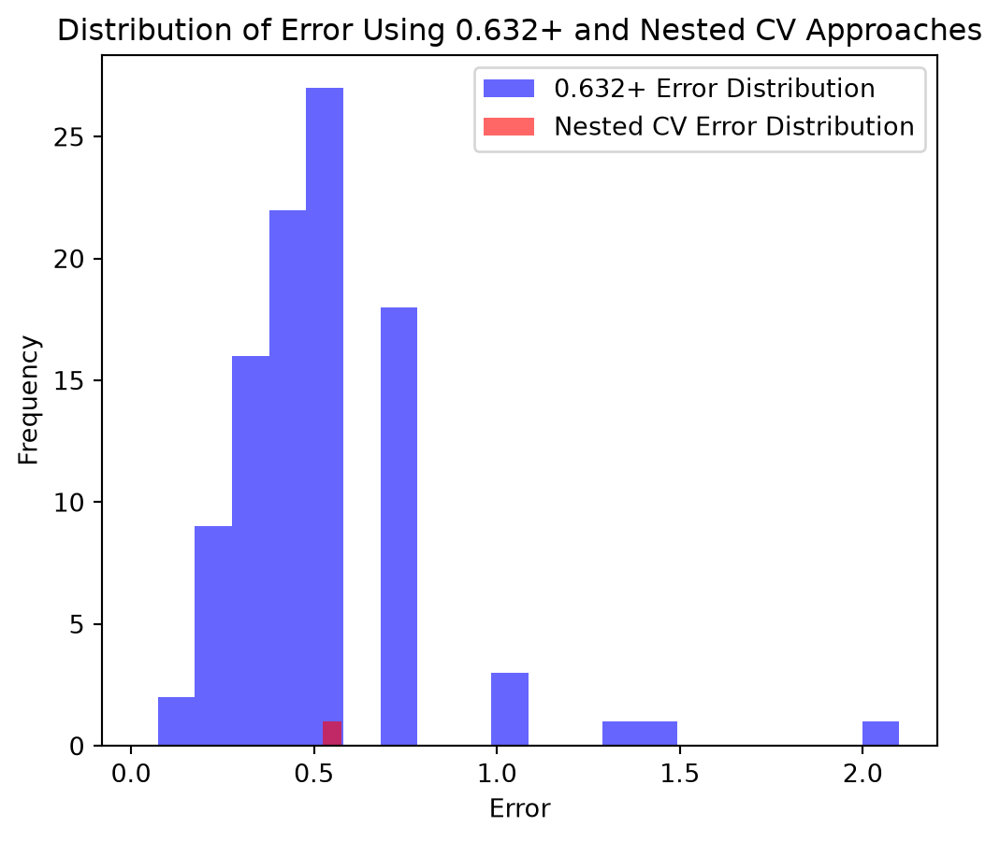

import numpy as np
def generate_noise_data(n_samples=40, n_features=100):
"""
This function creates a Gaussian-noise dataset with a 50/50 split of Class 1 and Class 2.
The features are generated from a normal distribution.
Returns
-------
X : ndarray, shape (n_samples, n_features)
Feature matrix.
y : ndarray, shape (n_samples,)
Balanced labels: Class 1 and Class 2.
"""
# Prevents odd number of samples to ensure a 50/50 class split.
if n_samples % 2 != 0:
raise ValueError("n_samples must be even for an exact 50/50 class split.")
# Generate noise dataset with mean=0 and std=1 for features, and balanced classes.
X = np.random.normal(loc=0, scale=1, size=(n_samples, n_features))
y = np.array([1] * (n_samples // 2) + [2] * (n_samples // 2))
# Randomize row order so classes are not grouped together.
indices = np.random.permutation(n_samples)
return X[indices], y[indices]
# call this function
X, y = generate_noise_data(n_samples=40, n_features=100)3 0.632+ Bootstrap Method for Error Estimation
3.1 Improvements on Cross-Validation: The 0.632+ Bootstrap Method by Efron and Tibshirani (1997)
3.1.1 Paper Summary
The goal of the Efron and Tibshirani (1997) paper was to show that although cross validation can provide relatively unbiased error predictions, it can be have high variability. As an alternative, the authors presented the 0.632+ bootstrap method for error prediction, which produced error estimates which were less biased and had less variability than with using cross validation.
3.1.2 Variability in Error Estimation During CV
Cross validation (CV) is a common method for determining error estimate of a model. Leave one out CV (LOOCV) is typically unbiased, but can display high variability. Alternatively, 5-fold or 10-fold CV exhibit lower variance, but can display higher bias.
3.1.3 0.632+ Bootstrap As a Potential Solution
A bootstrap procedure was shown to be a suitable alternative for alleviating the variability challenges with CV. The 0.632+ method was shown to produce root mean squared (RMS) errors only about 80% as large as errors determined through CV.
3.1.4 Methods Used
The authors analyzed a combination of simulated data and subsets of actual data for their analysis.
3.1.5 Study Details
The authors presented a 0.632+ bootstrap method, which was developed to be an improvement on the 0.632 bootstrap method. The 0.632 model gets its name because during bootstrap sampling, on average, there is approximately 63.2% of the original observations from the original dataset that that appear at least once in a bootstrap sample, leaving approximately 36.8% as out-of-bag observations. These percentages can be derived from the following equations.
\[ P(\text{observation appears}) = 1 - e^{-1} = 0.632 \\ P(\text{observation is left out}) = e^{-1} = 0.368 \]
The 0.632 method consists of calculating two error estimates: one in which the model is trained on the bootstrap sample and evaluated on the same observations and the other in which the model is trained on the bootstrap sample and evaluated on the observations not selected during bootstrap sampling. The 0.632 model error is then given by the following equation. \[ \widehat{Err}^{(.632)} = 0.368\,\overline{err} + 0.632\,\widehat{Err}^{(1)} \\ \]
\[ where: \\ \widehat{Err}^{(.632)} = estimated error using .632 approach \\ \overline{err} = estimated error when model is trained and tested on bootstrap sample (Errboot) \\ \widehat{Err}^{(1)} = estimated error when model is trained on bootstrap sample and tested on out of bag samples (Erroob) \]
The 0.632+ bootstrap method presesented in the paper improves on the 0.632 method by using a weight factor applied to both errors. This weight factor is determined based on the relative overfitting of the model compared to the error of the model if no information were known about the model.
In the paper, the authors analyzed the error predictions of various models developed from 24 different datasets using both the 0.632+ method and CV. Some datasets were simulted, while others were subsets of actual data. The datasets consisted of sample sizes ranging from 12 to 100, various distributions, class sizes ranging from 2 to 15, and various model types used. The authors found that 50 bootstrap samples were sufficient for their experiments. In all 24 experiments, the 0.632+ method outperformed CV.
3.1.6 Computation Plan
My computation plan is to perform error estimation of a model developed from simulated data using both the 0.632+ bootstrap method and the nested CV method. I plan to use the same simulated dataset and the nested CV approach from the Varma and Simon (2006) paper. I plan to evaluate both error estimation methods based on their relative bias, variability, and computation time. I also plan to compare the results of each method with an independent test error developed using the delta star model selection approach also described in the Varma and Simon (2006) paper.
3.1.7 Computation Details
First, a simulated null dataset was developed using the same methodology as in the Varma and Simon (2006) paper. The data set consisted of 40 samples, 100 features, and had a 50/50 split of Class 1 and Class 2.
Then the data was plotted to visualize it.
import matplotlib.pyplot as plt
plt.scatter(X[y == 1, 0], X[y == 1, 1], color='blue', label='Class 1')
plt.scatter(X[y == 2, 0], X[y == 2, 1], color='red', label='Class 2')
plt.title('Simulated Dataset with 50/50 Class Split')
plt.xlabel('Feature 1')
plt.ylabel('Feature 2')
plt.legend()
plt.show()
The class proportions of the dataset were then developed. These will be used later during the calculation of the err_noinfo term in the bootstrap error estimation.
import numpy as np
# determines the names and counts of each class in the dataset
classes, counts = np.unique(y, return_counts=True)
# computes the class proportions
class_proportions = counts / np.sum(counts)
print(class_proportions)[0.5 0.5]Bootstrap sampling (with replacement) was performed on the dataset. 50 samples were selected from the original dataset during bootstrap sampling to mimic the bootstrap sample size in the Efron and Tibshirani (1997) paper. Bootstrap sampling was conducted on the indices of the original dataset so that the indices of the in-bag and out-of-bag samples could easily be determined. These will be needed later in error estimation.
from sklearn.utils import resample
def bootstrap_sampling(X, y, B=50):
"""
This function performs bootstrap sampling on a dataset and returns the bootstrap sample and indices of in-bag and out-of-bag samples. 50 observations (B) are sampled with replacement during boostrapping.
RETURNS
-------
in_bag_indices = indices of original dataset that are in-bag
oob_indices = indices of original dataset that are out-of-bag
X_boot = observations in bootstrap sample
y_boot = classes in bootstrap sample
"""
# determine indices of X
X_samples = len(X)
X_indices = np.arange(X_samples)
# bootstrap the indices of the dataset. Use sci-kit learn resample.
boot_indices = resample(X_indices, n_samples=B, replace=True, random_state=1)
# determine in-bag and out-of-bag indices. Will be used later for error estimation.
in_bag_indices = np.unique(boot_indices)
oob_indices = np.setdiff1d(X_indices, boot_indices)
# get bootstrap sample
X_boot = X[boot_indices]
y_boot = y[boot_indices]
return boot_indices, oob_indices, X_boot, y_boot
# run this function
boot_indices, oob_indices, X_boot, y_boot = bootstrap_sampling(X, y, B=50)Similar to the computation for the Varma and Simon (2006) paper, the Nearest Centroid classifier within the scikit-learn library was used. The shrink_threshold parameter was used as the paper’s delta hyperparameter. Ten values of delta were evaluated, ranging from 0.01 to 1.0. A 10-fold cross validation process was used to determine the optimal delta hyperparameter, called delta star.
import numpy as np
from sklearn.neighbors import NearestCentroid
from sklearn.model_selection import cross_val_score, KFold
def cross_validation(X_boot, y_boot):
"""
This function runs cross validation on the input dataset.
The model used in this function is the NearestCentroid classifier.
Delta values are defined as 10 evenly spaced values from 0.01 to 1.0.
A 10-fold cross validation is performed on each delta value to determine the optimal delta value, delta star.
The function returns the delta star value and the mean cross validation error for the delta star model.
RETURNS
-------
delta_star: float
The optimal delta value.
cv_error_delta_star: float
The mean cross validation error for the delta star model.
"""
# 10 values of delta from 0.01 to 1.0
delta_values = np.linspace(0.01, 1.0, 10)
# define nearest centroid model
model = NearestCentroid(metric='euclidean')
# Use 10-fold CV to determine the optimal delta hyperparameter
kf = KFold(n_splits=10, shuffle=True, random_state=1)
# Initialize a list to store mean CV scores for each delta value
cv_scores = []
# loop through each delta value and perform cross validation
for delta in delta_values:
model.set_params(shrink_threshold=delta)
scores = cross_val_score(model, X_boot, y_boot, cv=kf, scoring='accuracy')
cv_scores.append(scores.mean()) # store mean CV score for each delta value
# returns the index of the delta value that had the highest mean CV score
idx_max_score = np.argmax(cv_scores)
# returns the delta value that had the highest mean CV score
delta_star = delta_values[idx_max_score]
# returns the mean CV error for the optimal delta
cv_error_delta_star = 1 - cv_scores[idx_max_score]
return delta_star, cv_error_delta_star
# call this function
delta_star, cv_error_delta_star = cross_validation(X_boot, y_boot)
print(delta_star)0.01After the delta_star hyperparameter was selected, the delta star model was created. The .632+ method of error estimation was then used to evaluate the delta star model. This was done by first training the delta star model on the bootstrap sample. Then the error was evaluated on both entire bootstrap sample and out-of-bag sample. Finally, the relative overfitting factor and weight factor were calculated to compute the final .632+ error of the model.
from sklearn.metrics import accuracy_score
def calc_err_632_plus(X, y, boot_indices, oob_indices, delta_star, class_proportions):
"""
This function determines the 0.632+ error of the delta star model.
RETURNS
-------
err_632_plus: float
The 0.632+ error of the delta star model.
"""
# create delta star model using delta star hyperparameter
model_delta_star = NearestCentroid(metric='euclidean', shrink_threshold=delta_star)
# get bootstrap sample and out-of-bag sample
X_boot = X[boot_indices]
y_boot = y[boot_indices]
X_oob = X[oob_indices]
y_oob = y[oob_indices]
# fit delta star model on bootstrap sample
model_delta_star.fit(X_boot, y_boot)
# use model to predict class on bootstrap sample and determine error
y_boot_pred = model_delta_star.predict(X_boot)
accuracy_boot = accuracy_score(y_boot, y_boot_pred)
err_boot = 1 - accuracy_boot
# use model to predict class on out-of-bag sample and determine error
y_oob_pred = model_delta_star.predict(X_oob)
accuracy_oob = accuracy_score(y_oob, y_oob_pred)
err_oob = 1 - accuracy_oob
# calculate "no information" error
err_noinfo = 1 - np.sum(class_proportions * class_proportions)
# calculate relative overfitting factor and weight factor
rel_over_fact = (err_oob - err_boot) / (err_noinfo - err_boot)
weight_fact = 0.632 / (1 - 0.368 * rel_over_fact)
# calculate final .632+ error
err_632_plus = (1 - weight_fact) * err_boot + weight_fact * err_oob
return err_632_plus
# run this function
err_632_plus = calc_err_632_plus(X, y, boot_indices, oob_indices, delta_star, class_proportions)
print(err_632_plus)0.5767588747879993The above procedure was then repeated for 100 simulations to determine the distribution of error estimates using the 0.632+ methodology. The computation was timed to determine how long it took to run these simulations using the 0.632+ error estimation method.
# start timing process to determine how long this set of simulations takes to run
import time
start = time.perf_counter()
import pandas as pd
num_sims_632 = 100
# create empty list to store results
err_632_plus_results = []
for i in range(num_sims_632):
# generate noise data
X, y = generate_noise_data(n_samples=40, n_features=100)
# compute class proportions
classes, counts = np.unique(y, return_counts=True)
class_proportions = counts / sum(counts)
# perform bootstrap sampling
boot_indices, oob_indices, X_boot, y_boot = bootstrap_sampling(X, y, B=50)
# perform cross validation to select delta star hyperparameter
delta_star, cv_error_delta_star = cross_validation(X_boot, y_boot)
# determine 0.632+ error estimate
err_632_plus = calc_err_632_plus(X, y, boot_indices, oob_indices, delta_star, class_proportions)
# put result into list
err_632_plus_results.append(err_632_plus)
# end timing
time_632_plus = time.perf_counter() - start
print(time_632_plus)
# convert list to dataframe and show head
err_632_plus_results_df = pd.DataFrame(err_632_plus_results)
err_632_plus_results_df.head()41.375564100104384| 0 | |
|---|---|
| 0 | 0.769203 |
| 1 | 0.431991 |
| 2 | 0.233278 |
| 3 | 0.318540 |
| 4 | 0.576759 |
The .632+ error distributions over all of the simulations were plotted to view their bias and variability.
import matplotlib.pyplot as plt
plt.figure(figsize=(6, 5))
plot_params = {"bins":20, "alpha":0.6}
plt.hist(err_632_plus_results_df, color="blue", label="0.632+ Error Distribution", **plot_params)
plt.xlabel("Error")
plt.ylabel("Frequency")
plt.title("Distribution of 0.632+ Error")
plt.legend()
plt.show()
Next the nested CV error estimation approach was conducted to compare with the .632+ error estimates. Only 20 simulations were conducted to reduce computation time.
# start timing process to determine how long this set of simulations takes to run
import time
start = time.perf_counter()
import pandas as pd
from sklearn.model_selection import LeaveOneOut
from sklearn.neighbors import NearestCentroid
from sklearn.metrics import accuracy_score
num_sims_nested_cv = 1
# create empty list to store results
nested_cv_results = []
for i in range(num_sims_nested_cv):
# generate noise data
X, y = generate_noise_data(n_samples=40, n_features=100)
# Create outer leave-one-out cross-validation
loo = LeaveOneOut()
# Create empty list to store the prediction results from outer loop
outer_errors = []
# Perform outer loop LOOCV
for train_index, test_index in loo.split(X):
# Split data into outer training and test sets
X_train = X[train_index]
X_test = X[test_index]
y_train = y[train_index]
y_test = y[test_index]
# Inner loop 10-fold CV to select delta star
# Don't need error values from cross_validation this time since CV error will be calculated in outer loop
delta_star, _ = cross_validation(X_train, y_train)
# Create model using delta star
model = NearestCentroid(metric="euclidean", shrink_threshold=delta_star)
# Fit model using all 39 outer training samples
model.fit(X_train, y_train)
# Predict the held-out outer test sample
y_pred = model.predict(X_test)
# Calculate classification error for this outer loop
error = 1 - accuracy_score(y_test, y_pred)
# Store outer loop error
outer_errors.append(error)
# Calculate mean error across all outer loops
nested_cv_error = sum(outer_errors) / len(outer_errors)
# put result into list
nested_cv_results.append(nested_cv_error)
# end timing
time_nested_cv = time.perf_counter() - start
print(time_nested_cv)
# convert list to dataframe and show head
err_nested_cv_results_df = pd.DataFrame(nested_cv_results)
err_nested_cv_results_df.head()16.713841899996623| 0 | |
|---|---|
| 0 | 0.525 |
Then the nested CV error distributions were plotted to compare their results to the 0.632+ error estimation approach.
import matplotlib.pyplot as plt
plt.figure(figsize=(6, 5))
plot_params = {"bins":20, "alpha":0.6}
plt.hist(err_632_plus_results_df, color="blue", label="0.632+ Error Distribution", **plot_params)
plt.hist(err_nested_cv_results_df, color="red", label="Nested CV Error Distribution", **plot_params)
plt.xlabel("Error")
plt.ylabel("Frequency")
plt.title("Distribution of Error Using 0.632+ and Nested CV Approaches")
plt.legend()
plt.show()
As shown in the figure, the simulated results from both approaches appear to be centered around 0.5, which is the theoretical mean of the null dataset. However, the 0.632+ appears to have greater variability than the nested CV approach. This could also be due to the greater number of simulations run for the 0.632+ approach.
Finally, some statistics were generated to numerically compare the two approaches.
# calculate mean error of both approaches during simulations
mean_err_632 = err_632_plus_results_df.iloc[:,0].mean()
mean_err_nested_cv = err_nested_cv_results_df.iloc[:,0].mean()
# calculate std of both approaches
std_632 = err_632_plus_results_df.iloc[:,0].std()
std_nested_cv = err_nested_cv_results_df.iloc[:,0].std()
# calculate root mean square for both approaches
from sklearn.metrics import root_mean_squared_error
true_error = 0.5
rmse_632 = root_mean_squared_error([true_error] * len(err_632_plus_results_df), err_632_plus_results_df.iloc[:,0])
rmse_nested_cv = root_mean_squared_error([true_error] * len(err_nested_cv_results_df), err_nested_cv_results_df.iloc[:,0])
# calculate time per simulation for both approaches
time_per_632 = time_632_plus / num_sims_632
time_per_nested_cv = time_nested_cv / num_sims_nested_cv
# summary table
results_table = pd.DataFrame({
"Metric": ["Mean Error", "Standard Deviation", "RMSE", "Time per Simulation"],
".632+": [mean_err_632, std_632, rmse_632, time_per_632],
"Nested CV": [mean_err_nested_cv, std_nested_cv, rmse_nested_cv, time_per_nested_cv]
})
results_table| Metric | .632+ | Nested CV | |
|---|---|---|---|
| 0 | Mean Error | 0.541808 | 0.525000 |
| 1 | Standard Deviation | 0.283847 | NaN |
| 2 | RMSE | 0.285502 | 0.025000 |
| 3 | Time per Simulation | 0.413756 | 16.713842 |
As shwon in the results table, the nested CV error estimation approach resulted in less bias and less variability than the 0.632+ approach for the dataset used in this analysis. However, computation time is a tradeoff when using the nested CV approach. It took significantly more time to run than the 0.632+ approach.